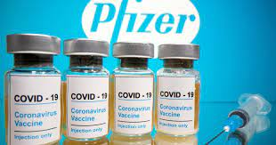
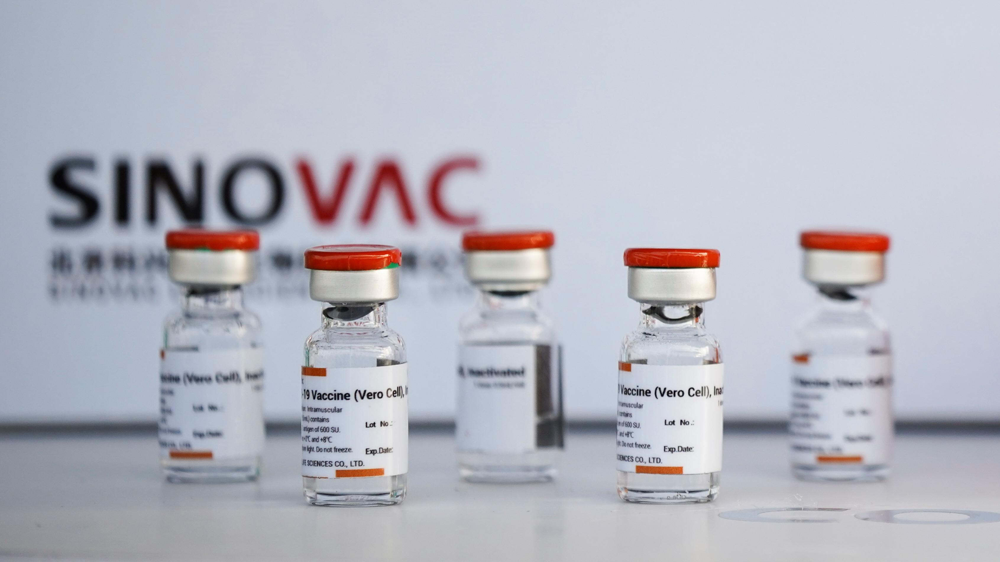
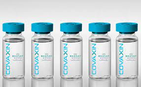
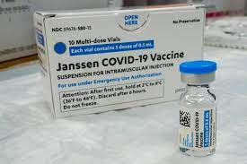
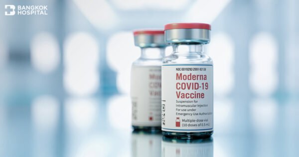
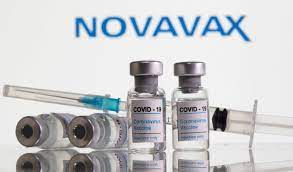
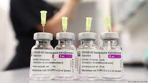
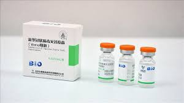
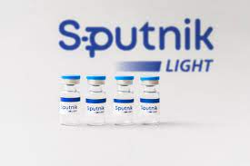
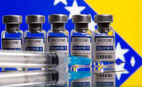

ACTION OR SOLUTIONS
Symptoms
Most Common Symptoms:
- Fever
- Cough
- Tiredness
- Loss of taste or smell
Less Common Symptoms:
- Sore Throat
- Headache
- Aches and Pains
- Diarrhea
- A rash on skin, or discolouration of fingers
- Red or irritated eyes
Prevention
To prevent the spread of COVID-19:
- Maintain a safe distance from others (at least 1 metre), even if they don’t appear to be sick.
- Wear a mask in public, especially indoors or when physical distancing is not possible.
- Choose open, well-ventilated spaces over closed ones. Open a window if indoors.
- Clean your hands often. Use soap and water, or an alcohol-based hand rub.
- Get vaccinated when it’s your turn. Follow local guidance about vaccination.
- Cover your nose and mouth with your bent elbow or a tissue when you cough or sneeze.
- Stay home if you feel unwell.
If you have a fever, cough and difficulty breathing, seek medical attention. Call in advance so your healthcare provider can direct you to the right health facility. This protects you, and prevents the spread of viruses and other infections.
Masks
Properly fitted masks can help prevent the spread of the virus from the person wearing the mask to others. Masks alone do not protect against COVID-19, and should be combined with physical distancing and hand hygiene. Follow the advice provided by your local health authority.
Treatment
After exposure to someone who has COVID-19, do the following:
- Call your health care provider or COVID-19 hotline to find out where and when to get a test.
- Cooperate with contact-tracing procedures to stop the spread of the virus.
- If testing is not available, stay home and away from others for 14 days.
- While you are in quarantine, do not go to work, to school or to public places. Ask someone to bring you supplies.
- Keep at least a 1-metre distance from others, even from your family members.
- Wear a medical mask to protect others, including if/when you need to seek medical care.
- Clean your hands frequently.
- Stay in a separate room from other family members, and if not possible, wear a medical mask.
- Keep the room well-ventilated.
- If you share a room, place beds at least 1 metre apart.
- Monitor yourself for any symptoms for 14 days.
- Call your health care provider immediately if you have any of these danger signs: difficulty breathing, loss of speech or mobility, confusion or chest pain.
- Stay positive by keeping in touch with loved ones by phone or online, and by exercising at home.
VACCINES
BioNTech, Pfizer Vaccine

Manufacturer/developer: BioNTech, Fosun Pharma, Pfizer
Research name: BNT162b2
Vaccine type: RNA
Administration method: Intramuscular injection
Sinovac-CoronaVac Vaccine

Manufacturer/developer: Sinovac
Research name: CoronaVac
Vaccine type: Inactivated
Administration method: Intramuscular injection
Covaxin Vaccine

Manufacturer/developer: Bharat Biotech
Research name: BBV152
Vaccine type: Inactivated
Administration method: Intramuscular injection
Johnson & Johnson Vaccine

Manufacturer/developer: Janssen Pharmaceutical Companies
Research name: JNJ-78436735 (Ad26.COV2.S)
Vaccine type: Non-Replicating Viral Vector
Administration method: Intramuscular injection
Moderna Vaccine

Manufacturer/developer: Moderna, NIAID
Research name: mRNA-1273
Vaccine type: RNA
Administration method: Intramuscular injection
Novavax Vaccine

Manufacturer/developer: Novavax
Research name: NVX-CoV2373
Vaccine type: Protein Subunit
Administration method: Intramuscular injection
Oxford, Astrazeneca Vaccine

Manufacturer/developer: AstraZeneca, University of Oxford
Research name: AZD1222 (ChAdOx1)
Vaccine type: Non-Replicating Viral Vector
Administration method: Intramuscular injection
Sinopharm BBIBP Vaccine

Manufacturer/developer: Beijing Institute of Biological Products, Sinopharm
Research name: BBIBP-CorV
Vaccine type: Inactivated
Administration method: Intramuscular injection
Sputnik Light Vaccine

Manufacturer/developer: Gamaleya Research Institute
Research name: Sputnik Light
Vaccine type: Non-Replicating Viral Vector
Administration method: Intramuscular injection
Sputnik V Vaccine

Manufacturer/developer: Gamaleya Research Institute
Research name: Gam-COVID-Vac
Vaccine type: Non-Replicating Viral Vector
Administration method: Intramuscular injection